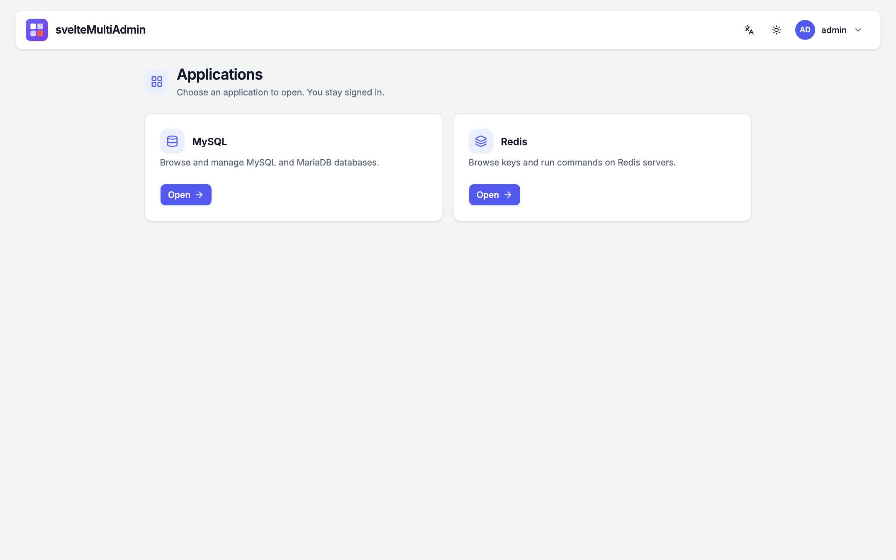

One sign-in for your database administration
svelteMultiAdmin bundles svelteMyAdmin and svelteRedisAdmin behind one portal. People sign in once — local accounts, OpenID Connect or your SSO proxy — and open either app without a second login. One container, one deployment, and each app keeps its own repository.

Everything between a person and their databases
The portal does the sign-in and the access decisions; the two apps keep doing what they do best, unchanged apart from a link back.
-
Sign in once
Open MySQL or Redis from the launcher with no second login. A short, single-use ticket moves you to the app, and logging out on the portal ends every session.
-
Three sign-in modes
Local accounts with an admin screen, OpenID Connect (code flow with PKCE), or the identity headers of an SSO proxy such as oauth2-proxy, trusted only from your proxy's addresses.
-
Access rules
Match a group, a user or an email and grant MySQL access, a Redis role (
ro,rw,admin) and the Redis servers a person may see. Rules are recomputed on every request. -
One hostname per app
The portal and each app answer on their own hostname, so the apps need no base-path changes and cookies never mix. The apps listen on loopback only.
-
Back to the portal
Each app gets a small, optional
Portalsetting that adds "Back to Admin portal" to its user menu. Without it, nothing changes. -
Apps stay separate
svelteMyAdmin and svelteRedisAdmin are git submodules pinned to release tags.
pnpm bundle:updatemoves them to the newest releases and stages the change. -
Built for Kubernetes
A ready manifest: discovery of review-namespace databases, SubjectAccessReview checks, config in Secrets, a volume for accounts, and an Ingress with three hosts.
-
Same look, three languages
The portal uses the apps' design system with light, dark and system themes, and the same English, French and Spanish catalogs. Both apps' audit logs record the person from the portal.
The portal in front, the apps on loopback
One container, one process tree. The portal starts and supervises both apps and proxies each request with identity it sets itself.
browser ──▶ ingress ──▶ MultiAdmin :3000 ── admin.example.com portal: login, launcher, user admin
│ ── mysql.admin.example.com ── gate ──▶ 127.0.0.1:3101 svelteMyAdmin
│ ── redis.admin.example.com ── gate ──▶ 127.0.0.1:3102 svelteRedisAdmin
└─ starts and supervises both apps1. Sign in
On the portal, with an account, your OIDC provider or the headers of your SSO proxy.
2. Get grants
Access rules turn your name, groups and email into what you may open and with which role.
3. Open an app
A 30-second, single-use ticket sets a cookie on the app’s hostname. No second login.
Read the security model: what the portal strips, what it sets, why the apps trust it, and the trade-offs.
See it in action
Click any screenshot to enlarge. Each one is available in light and dark.
Who may open what, decided in one place
The portal decides at the door, and the apps still enforce their own rules behind it.
- Rules, not per-app accounts. One list of rules maps groups, users and emails to MySQL access and to a Redis role and server list. Read the guide.
- Forged headers do nothing. The apps trust identity only from loopback; the portal removes every identity or forwarding header a client sends before setting its own. Security model.
- Access ends when it should. Sessions live in the portal: disabling a user, or a proxy session ending, applies on the next request on every host.
-
The real client in the apps' audit logs. Behind an SSO proxy
the portal resolves the client address from
X-Forwarded-Forthrough your trusted proxies. Audit log. - Kubernetes checks stay with the apps. The person's name and groups reach svelteMyAdmin and svelteRedisAdmin for their SubjectAccessReview checks. Kubernetes.
A modern, typed stack
- Svelte 5
- SvelteKit
- TypeScript
- Tailwind CSS
- shadcn-svelte
- openid-client
- zod
- Vitest & Playwright
Up and running with Docker
# fetch the portal with both apps (git submodules)
git clone --recurse-submodules https://github.com/razvn/svelteMultiAdmin.git
cd svelteMultiAdmin
# describe your three applications, then build and run
cp config.sample.json multiadmin.json
docker build -t multiadmin .
docker run -p 3000:3000 \
-v ./multiadmin.json:/config/multiadmin.json \
-v ./myadmin.json:/config/myadmin.json \
-v ./redisadmin.json:/config/redisadmin.json \
-v multiadmin-data:/data \
-e MULTIADMIN_BOOTSTRAP_PASSWORD=change-me multiadmin
Open the portal, sign in as admin and add accounts on the
Users page. The apps need three hostnames and a proxy that sends
x-forwarded-proto; see
Deployment, or
Kubernetes for a ready manifest. The apps are
documented at
svelteRedisAdmin and
svelteMyAdmin.